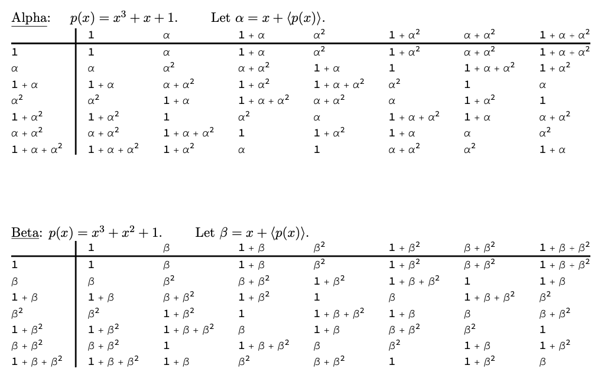

Section 5 Problem Set 5
The last one!
Due: Wednesday May 5, midnight CST. Time will be provided in class to work on these and discuss them with your peers.
We will work on problems like 5.1, 5.2, and 5.3 on Wednesday and Thursday, April 28-29.
5.1 Field of Order 25
Construct a field of order 25. You should prove that it is a field, describe the set of elements, show how to add two generic elements, show how to multiply two generic elements, and find the inverse of one nontrivial element.
5.2 Rational Quotient Field
Let \(p(x) = x^3 + 2 x^2 + 2 x + 2 \in \mathbb{Q}[x]\).
Show that \(p(x)\) is irreducible in \(\mathbb{Q}[x]\) using one of the reducibility tests in Chapter 17 of the book (also discussed on Wednesday Apr 29 in the videos and/or class). Then use one of our theorems (be sure to say which one) to conclude that \({\mathbb{E}}= \mathbb{Q}[x]/\langle p(x) \rangle\) is a field.
For shorthand, let \(\alpha := x + \langle p(x) \rangle \in {\mathbb{E}}\) (that is, we’ve named this coset \(\alpha\)). Describe all of the elements of \({\mathbb{E}}\) in terms of \(\alpha\). You can also identify constants with their coset: for example \(5 = 5 + \langle p(x) \rangle\). Show how to add two generic elements in \({\mathbb{E}}\) and how to multiply two generic elements in \({\mathbb{E}}\).
Use the polynomial extended GCD algorithm in WolframAlpha (or Mathematica) to find the inverse of \(\alpha^2 + 1\) in \({\mathbb{E}}\). Then multiply them out to show that they are inverses. See also the voicethread video on how to do this and the final pdf.
5.3 Fields of Order 8
In class on Wednesday and Thursday Apr 28-29 we will construct two different fields of order 8: \({\mathbb{E}}_\alpha\) and \({\mathbb{E}}_\beta\). It is known (Theorem 22.1 in the book) that, up to isomorphism, there is a uniqe field of order \(p^k\) for any prime number \(p\) and any \(k \in \mathbb{Z}_{k>0}\). Find the isomorphism between \({\mathbb{E}}_\alpha\) and \({\mathbb{E}}_\beta\) and justify your answer.

5.4 A Splitting Field
We will work on examples like this on Monday and Tuesday, May 3-4.
This problem will examine the polynomial \(p(x) = x^4 -2 \in \mathbb{Q}[x]\). Our aim is to understand the structure of its splitting field, which is the smallest subfield of \(\mathbb{C}\) in which \(p(x)\) factors completely into linear terms.2
Draw a field lattice diagram (we will do examples of this in class) that contains the fields \(\mathbb{Q}, \mathbb{Q}(\sqrt{2}), \mathbb{Q}(\sqrt[4]{2}), \mathbb{Q}(i), \mathbb{Q}(\sqrt[4]{2},i)\). Label the edges with
- the degree of the field extension
- the minimal polynomial of the extension
- a basis of the top field over the bottom field.
Justify each of your labels in part (a).
Show how \(p(x) = x^4 -2\) factors in each of these 5 fields.
(Extra credit) Show where \(\mathbb{Q}(\sqrt[4]{2} + i)\) fits into this picture and justify your assertions.
5.5 Optional: Capstone Conference
You can replace any one of the above problems by going to one of the algebra-focused capstone presentations and providing a two-paragraph write up about what you learned.
I will link to the schedule here soon.
On Wednesday, May 6, the MSCS seniors will be giving their final capstone presentations. The capstone conference was canceled due to the pandemic, so throughout the day we are hosting an abbreviated capstone celebration. Students have created a digital artifact about their project. During the capstone presentation panels they will introduce their artifact and answer questions.
Here are the rules:
Go to the capstone panel presentation of one of the following students: Eric Fong (9:30-10:30), Jennifer DeJong (11:30-12:00), Yilin (Ellen) Chen (12:30-1:00), Tate Munnich (4:30-5:00), or Logan Caraco (4:30-5:00).
Also, explore their artifact. The links will be here on Friday. These might be web pages, videos, computer programs.
Provide a two-paragraph write up.
- In one of the paragraphs, explain as best you can, what their project was about and what sort of algebra was involved. From you write up I should be able to tell that you looked at the artifact.
- In the second paragraph, write about some other aspect of the response you had to their presentation. For example: What did they do that was effective at communicating their ideas? What would you ask them about if you had time to sit down and talk about the project? What did you learn about presenting mathematics that can be useful in your capstone presentation or in a future presentation that you give?
In this problem you can take as fact that \(\sqrt[4]{2} \in \mathbb{R}\) and \(i \in \mathbb{C}\setminus \mathbb{R}\).↩︎